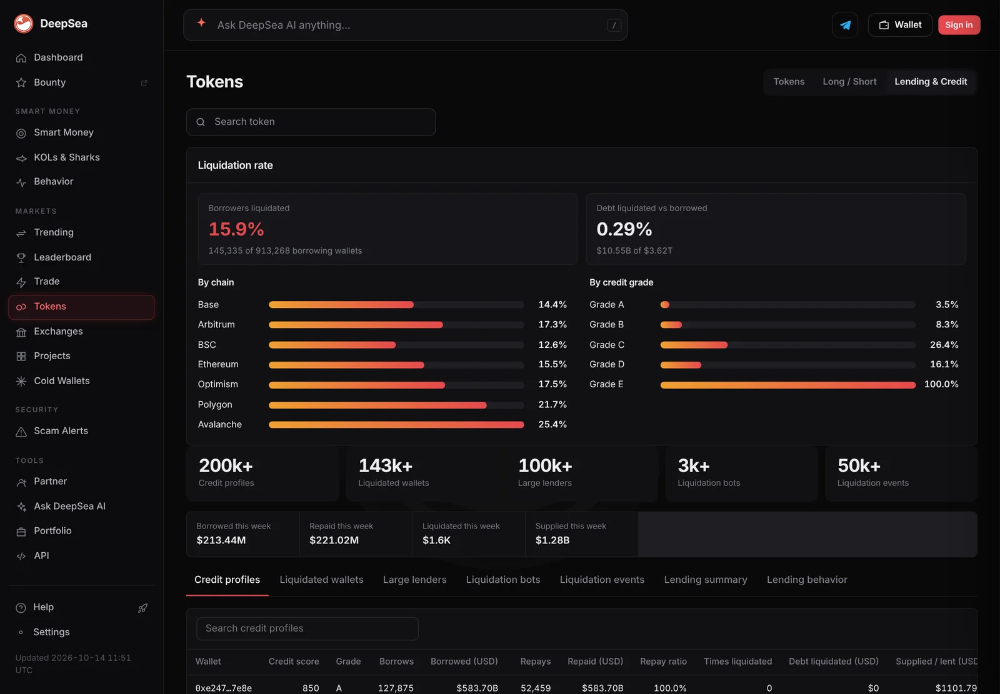
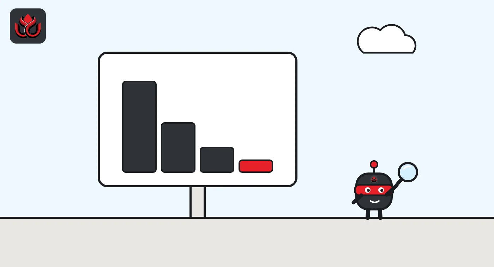
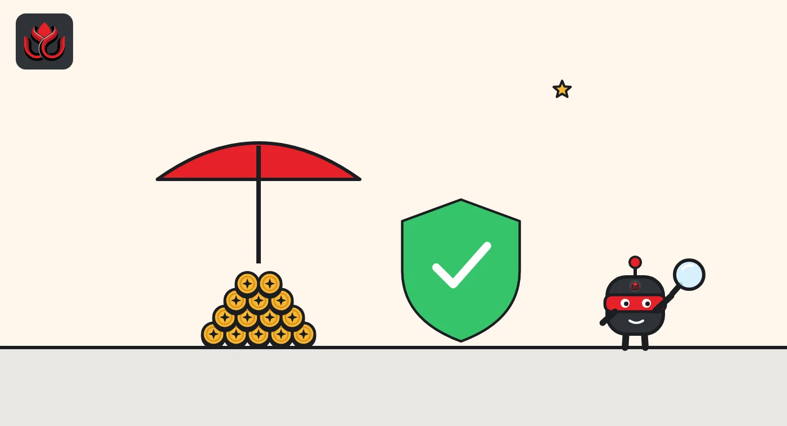

How crypto liquidations work: why a 10% move can wipe out a 10x trade
A liquidation is when an exchange force-closes a leveraged trade because losses have eaten through the trader's collateral. It protects the exchange and other traders from debts the trader cannot pay.
Key points
- Leverage lets traders open positions bigger than their deposit. The deposit, called margin, must cover losses.
- When the margin left in an account falls below the exchange's maintenance requirement, the exchange starts closing positions automatically.
- Deribit, for example, liquidates in steps, one round per second, and stops as soon as the account is back within limits.
- Liquidation fees go into an insurance fund that covers accounts that lose more than they had.
 What DeepSea's data shows
What DeepSea's data shows
Liquidations also happen in DeFi lending, and DeepSea counts them. Across the lending wallets on its Lending & Credit page, 145,335 of 913,268 borrowing wallets, or 15.9%, have been liquidated at least once. By value, though, only 0.29% of borrowed debt, $10.55 billion of $3.62 trillion, has been liquidated.
Risk is uneven. DeepSea's liquidation rate ranges from 12.6% of borrowers on BSC to 25.4% on Avalanche, and from 3.5% for its grade A wallets to 100% for grade E. On perpetual futures, the traders DeepSea tracks used average leverage of 15.8x on SOL and 9.6x on AAVE on November 2, its token pages show.

Data: DeepSea (desea.io), checked November 2, 2026, 7:56 a.m. ET.
What is a crypto liquidation?
A liquidation is a forced closing of a trader's position by the exchange. It only happens to traders using leverage, meaning they borrowed to open a position larger than the cash they put up. That cash is called margin.
If the market moves against the trade, losses come out of the margin. Before the margin runs out, the exchange steps in and sells (for a long) or buys back (for a short) to stop the losses from growing beyond what the trader can pay.
Someone holding coins outright, with no borrowing, cannot be liquidated. Their coins can lose value, but nobody will sell them by force.
How does leverage lead to liquidation?
The math is simple. With 10x leverage, $1,000 of margin controls a $10,000 position. A 10% price move against that position is a $1,000 loss, which wipes out the whole deposit. In practice the exchange acts earlier, because it requires a cushion called the maintenance margin.
Higher leverage shrinks the distance to liquidation. At 50x leverage, which Deribit offered on its perpetual when it launched in 2018, a move of about 2% is enough to consume the full margin.
For scale, bitcoin traded at about $77,928 on CoinMarketCap as of November 2, 2026. A 2% move from there is about $1,559, something bitcoin can do within hours.

How do you estimate a liquidation price?
A rough estimate needs only the entry price and the leverage. For a long position, the price can fall by about 1 divided by the leverage before the margin is gone. For a short, it can rise by the same share.
Take bitcoin at about $77,928, its price on CoinMarketCap as of November 2, 2026:
- A 5x long loses its margin after a fall of about 20%, near $62,342.
- A 10x long loses its margin after a fall of about 10%, near $70,135.
- A 20x long loses its margin after a fall of about 5%, near $74,032.
- A 10x short loses its margin after a rise of about 10%, near $85,721.
The real liquidation price is always closer than these figures. Exchanges start closing positions before the margin reaches zero, because they require maintenance margin as a buffer, and fees and funding payments also eat into the balance. The venue's own estimate, built on its own margin rules, is the one that counts.
Adding more collateral moves the liquidation price further away; adding to the position or withdrawing collateral moves it closer. On accounts with several positions, a loss in one can bring the whole account toward the threshold, which is why Deribit's rules describe an order in which positions are closed.
Approximate move that wipes out margin, by leverage
% price move
Simple arithmetic: 1 divided by leverage. Real liquidation happens earlier because of maintenance margin and fees.
When does an exchange start liquidating?
Each exchange sets its own rules. Deribit publishes its liquidation rules, which make a clear example. Liquidation starts when the account's maintenance margin requirement is higher than 100% of its margin balance. There is no margin call, no warning message asking for more money. The system acts as soon as equity is too low.
What counts as a loss depends on the price the exchange uses. Deribit's perpetual specification describes a mark price built from its spot index plus a smoothed average of the gap between the contract and that index. A price anchored to an index moves less on a single odd trade than the last price on one order book does.

What happens during a liquidation?
Deribit uses what it calls incremental auto-liquidation. The engine first tries to close only part of the position, in rounds, one per second. It stops as soon as the maintenance margin is back below the margin balance, so the rest of the position stays open.
While this runs, the trader cannot place or cancel orders. Control returns only once the account is back within limits. Liquidation trades go through the normal order book and carry an extra liquidation fee. On accounts with options, Deribit closes futures and perpetuals before options, and it may skip illiquid positions in favor of more liquid ones.
Deribit's 2018 launch note said any capital left after a position is closed is returned to the customer rather than forfeited.
What is an insurance fund?
Sometimes prices move so fast that a position cannot be closed before the account goes below zero. That account is bankrupt: it owes more than it had. Someone still has to pay the traders who won on the other side.
That is the job of the insurance fund. Deribit's is filled by the extra liquidation fees, added every hour, and is used to cover the negative balance of bankrupt accounts. Deribit publishes bankruptcies in real time on its insurance page.
If the fund ever ran dry, Deribit says further losses would be socialized among the winning traders for that day, meaning their profits would be cut pro rata. Its settlement page describes the same backstop. Deribit says no socialized loss event has happened to date.
Why do liquidations come in waves?
Forced selling pushes prices down, which can push other leveraged longs below their own maintenance margin, which triggers more forced selling. The same chain works upward for shorts. This is why headline liquidation totals often spike in a few hours and why one side, longs or shorts, usually dominates.
Crowded positioning makes cascades more likely. Funding rates and long/short ratios are clues to how crowded a trade is; see LC Insight's report on Hyperliquid's big traders swinging between long and short.
Timing matters too. Crypto markets trade around the clock, so a cascade can start at night or on a weekend, when fewer traders are watching and order books are thinner. Thin books mean each forced order moves the price further, which can push the next group of accounts over their limits faster.
LC Insight analysis
This section is our reading of the facts above, not a statement of fact.
- We think the most useful number for a trader is not their leverage but the price at which their position would be liquidated. Writing that price down before opening a trade makes the risk concrete.
- Headline liquidation totals measure stress, not direction. A big wave of long liquidations often clears out crowded bets, but it says little on its own about where prices go next.
What's next
- Insurance fund balances published by exchanges after volatile days
- Changes to maximum leverage or margin rules
- Open interest building up while funding rates climb
Frequently asked questions
Can I lose more than my margin?
It depends on the venue's rules. Deribit says its insurance fund covers the negative equity of bankrupt accounts, and that losses would only be shared among winning traders if the fund ran out.
Does a liquidation close my whole position?
Not always. Deribit closes positions in steps and stops once the account meets its maintenance margin again.
Who gets the liquidation fee?
On Deribit, the extra liquidation fee goes into the insurance fund.
Can spot holders be liquidated?
No. Liquidation only applies to positions bought with borrowed money or margin.
Disclaimer. This article is based on public information and the sources listed below as of the update time shown. It is for information only and is not investment, legal or tax advice. Figures may change as companies and authorities publish new data.